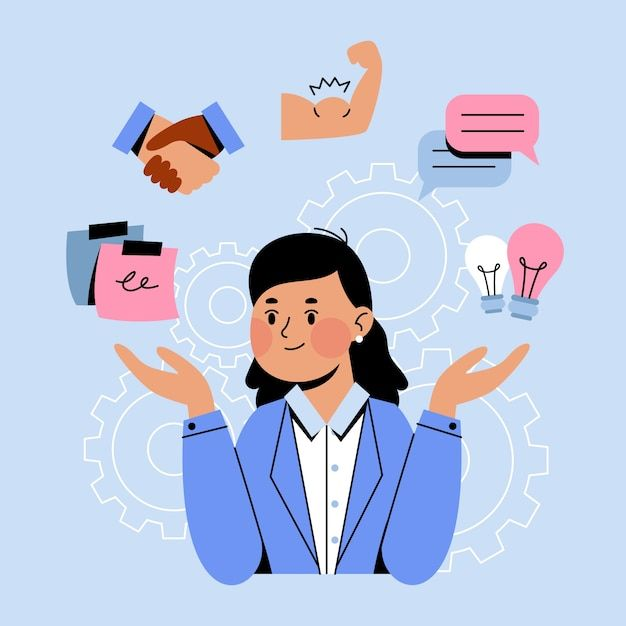

Strengthen Your Soft Skills
Soft skills are personal qualities that help you work well with others. Employers value communication, teamwork, and problem-solving just as much as technical abilities.

Where Can You Practice Soft Skill?Where Can You Practice?
At SchoolGroup projects can help you practice communication, teamwork, responsibility, and time management.Group projects can help you practice communication, teamwork, and time management.
In OrganizationsJoining school organizations can help you develop leadership, communication, and collaboration skills.Joining school clubs or volunteer networks helps build leadership and active collaboration.
Through ProjectsPersonal and academic projects can help you practice problem-solving, organization, and adaptability.Personal and academic milestones push you to refine problem-solving and self-adaptability.
Key Soft Skills
"Communication"
Clearly express your ideas and listen actively to understand others.
"Teamwork"
Collaborate with others, share responsibilities, and support your team.
"Problem Solving"
Identify challenges and think through practical solutions step by step.
"Time Management"
Prioritize your tasks and meet deadlines without feeling overwhelmed.
"Adaptability"
Stay flexible and open to change when plans or situations shift.